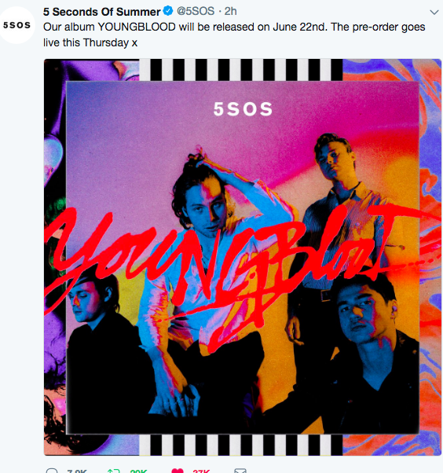

The boys are named Calum, Michael, Luke, and Michael. They are all Australian. Let me say one thing, THEY ARE NOT A BOY BAND!! Boy bands don't write their own music or play their own instruments.
Luke Hemmings is the lead singer of the band. He is also the baby at 21 years old. He plays the guitar and sings, writes, and does high jumps on stage!
Calum Hood is the bassist and singer. He is 22 years old, an Aquarius, and his sister, Mali-Koa, is also a singer
Ashton Irwin is the drummer and back up vocals. Personally, I think he is underrated because he works so hard. He grew up in a 'broken home' as his father was separated from him. He is known as the dad of the band since he is the oldest.
Michael Clifford is a singer and guitarist in 5 Seconds of Summer. He is a Scorpio. He is a bit clumsy, as he falls off stage a lot and he burnt his hair from it catching on fire.
- Luke's Twitter
- Michael's Twitter
- Calum's Twitter
- Ashton's Twitter